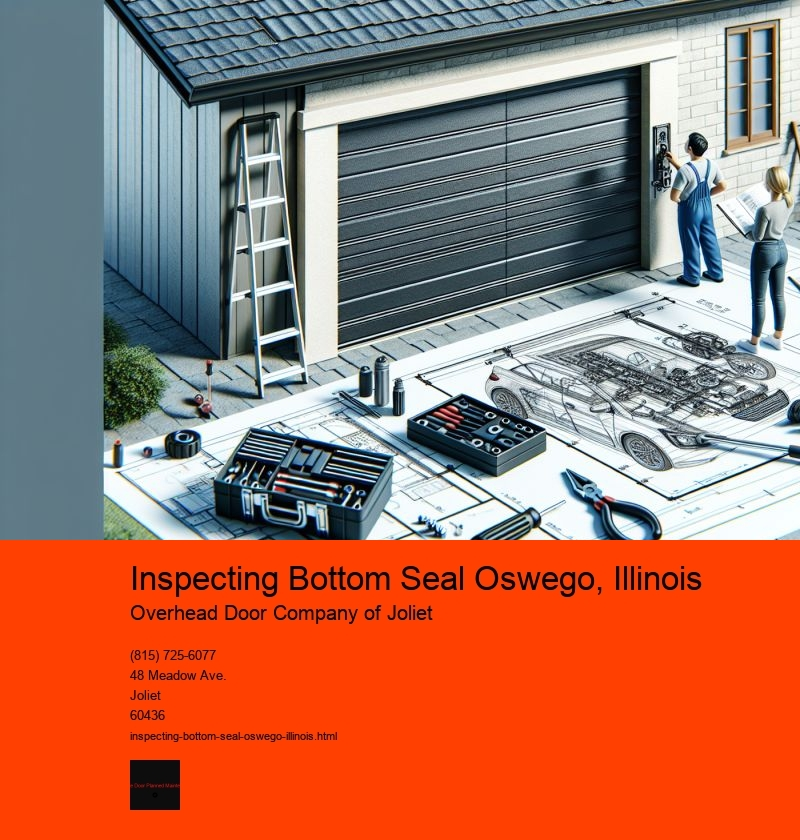

Inspecting the bottom seal of a structure might not be the most thrilling task on your to-do list, but for residents and business owners in Oswego, Illinois, it can be a crucial part of maintaining a buildings integrity. Oswego, a quaint yet rapidly growing village nestled along the Fox River, is known for its charming blend of historic and modern architecture. With the areas variable climate, which ranges from hot, humid summers to frigid, snowy winters, ensuring that a building is well-sealed against the elements becomes a top priority.
The bottom seal of a building, whether its a commercial property or a private residence, plays a pivotal role in maintaining energy efficiency and preventing damage. This seal is essentially a barrier that keeps water, dust, pests, and drafts from entering the structure. A compromised bottom seal can lead to a host of problems, from higher energy bills to structural damage caused by water intrusion. In Oswego, where seasonal changes can be extreme, the necessity of a robust seal becomes even more pronounced.
The inspection of a bottom seal in Oswego involves a thorough examination of the materials and techniques used to create the barrier. This typically includes checking for any visible cracks or gaps in the sealant, ensuring that the materials have not deteriorated over time, and verifying that the seal is still adhering properly to the surfaces it protects. Professional inspectors might employ various tools and technologies, such as thermal imaging cameras, to detect hidden leaks or weaknesses that arent visible to the naked eye.
Local regulations and building codes can also influence how inspections are conducted and the standards that seals must meet. In Oswego, like in many parts of Illinois, building codes are designed to ensure that properties can withstand the states diverse weather conditions. This means that inspectors must be familiar with both the local climate and the specific requirements set forth by local ordinances.
Beyond the technical aspects, inspecting the bottom seal of a building in Oswego also involves a bit of community engagement. Residents and business owners often take pride in their properties and are eager to learn about ways to improve their buildings efficiency and longevity. Inspectors in Oswego need to be communicative and informative, offering insights and recommendations that help property owners make informed decisions about maintenance and repairs.
In conclusion, while inspecting a bottom seal might seem like a mundane task, it holds significant importance for the residents of Oswego, Illinois. Ensuring that a building is well-sealed not only protects it from the elements but also contributes to its overall energy efficiency and lifespan. As Oswego continues to grow and develop, maintaining the integrity of its buildings will remain a vital part of preserving the villages unique character and charm. Whether youre a homeowner or a business proprietor, paying attention to the bottom seal can save you from potential headaches down the line, making it an essential aspect of property maintenance in this beautiful Illinois locale.
Replacing Worn Weather-stripping Oswego, Illinois
